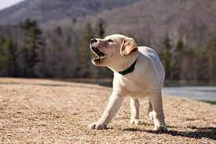

Dogs We Own


Embark on a heartwarming journey to find your perfect furry companion at our Dog Adoption Center. Each enchanting dog in our care comes with a unique tale of resilience, loyalty, and love waiting to be shared. Explore a world of wagging tails, soulful eyes, and boundless joy as you navigate through our collection of adorable dogs ready for adoption.
Our center, we believe that every dog deserves a loving home, and every home deserves the unwavering companionship of a four-legged friend. Whether you're drawn to the playful antics of a Golden Retriever or the gentle nature of a Labrador Retriever, our diverse selection of dogs awaits your discovery.
Discover not just a pet but a lifelong friend who will fill your days with laughter, warmth, and countless cherished moments. The journey to finding your furry friend begins here, where tails wag, hearts connect, and the magic of companionship unfolds. Welcome to a world of endless possibilities and the promise of unconditional love—your new best friend is waiting to make your life brighter.
To hear me say "WELCOME"? Click on the image below! 
We are committed to finding loving homes for dogs in need. Our adoption process is designed to ensure a seamless and joyful experience for both pets and owners. Here's why you should choose us:
Have questions? Feel free to reach out to us.
Phone: 123-456-789
Email: info@dogadoptioncenter.com